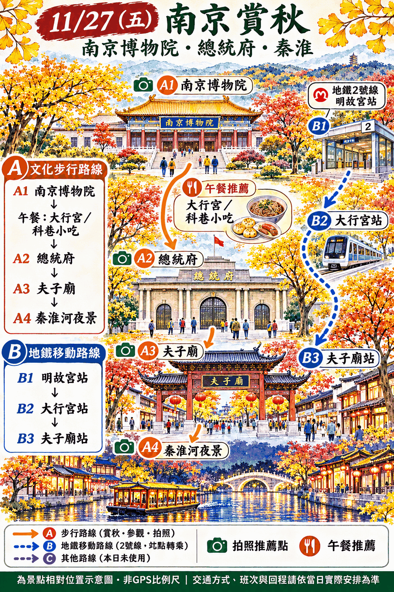

📍 站位：博物院建築前
取景：建築＋廣場
11/27（五） 南京博物院・總統府・秦淮
🍁 11-27｜南京博物院・總統府・秦淮｜正式彩繪每日路線圖

📍 當日路線・大字清晰版
以下依本日原行程時間安排重排，並非依模糊圖片辨字。可隨手機放大，水彩圖保留作景觀參考。
- 1南京博物院入口預估抵達 09:20
- 🍜大行宮方向午餐預估抵達 12:25
- 3總統府預估抵達 14:05
- 4夫子廟秦淮預估抵達 17:25
時間為估計，非預約時間；實際接駁及步行依現場路況。路線圖片的地理比例與連線尚未通過驗收。
🚇 11/27｜三景點實際地鐵轉乘（可離線閱讀）
① 南京博物院：地鐵 2 號線／6 號線「明故宮站」官方建議由1 號口向東約 300 公尺抵達南京博物院中山東路 321 號；台胞證入館需攜原件按預約憑證人工核驗。
② 南京博物院 → 總統府：回明故宮站搭2 號線往魚嘴方向，經西安門到大行宮（2 站）；5 號口往長江路，總統府新遊客入口為長江路 288 號，請勿走到原 292 號門樓。
③ 總統府 → 夫子廟秦淮：回大行宮換乘3 號線往南京南站方向，經常府街到夫子廟（2 站）。出站後按「夫子廟景區／秦淮河」方向步行；景區人流管制時依現場導引。
返程：從夫子廟站搭地鐵 3 號線往大行宮／南京站方向，或依住宿位置另選換乘線。電梯出口與實際無障礙轉乘尚未逐一查證。
11/27（五） 南京博物院・總統府・秦淮展開 ▾
⏱️ 慢走1.5倍｜到達機位與拍照時間
到達時間是估計，含慢走及必要轉乘緩衝；不是精確定位或預約時段。
08:30出發／前站 → 約09:20抵達｜南京博物院入口
🚶 地鐵＋出站慢走約50–70分
📸 展廳參觀拍照120–150分
⚠️ 館內可能限制拍照；依規定
12:00出發／前站 → 約12:25抵達｜大行宮方向午餐
🚶 交通＋步行25–40分
📸 用餐60–75分
⚠️ 可縮短博物院非重點展廳
13:45出發／前站 → 約14:05抵達｜總統府
🚶 步行20–30分含安檢
📸 參觀拍照70–90分
⚠️ 毗盧寺銀杏改選配
17:00出發／前站 → 約17:25抵達｜夫子廟秦淮
🚶 地鐵＋步行25–40分
📸 晚餐60–75分；夜景拍照30–45分
⚠️ 疲累可取消夜景
🚇 怎麼去
1號線新街口轉2號線明故宮／大行宮；晚間夫子廟
📷 看什麼・怎麼拍
博物院看六朝文物；總統府看近代史；秦淮拍夜色
☔ 雨天／替代
雨天保留博物院；取消夜遊
🍜 永和園 夫子廟
🍜 蓮湖糕團店
📸 今日沿路最佳機位（依景點順序）
加選 A6｜毗盧寺銀杏（可選）
如當天銀杏葉況佳，可在南京博物院與總統府之間選擇短訪；不要為此犧牲博物院時間。
🏺 南京博物院｜重點館藏與照片
入館先看當日展廳公告。展品輪換，未核實者不保證展出。
乾隆《行圍圖》旋轉蓋瓶
特展館2樓9號展廳（依2026年展訊；入館再核對）
🖼️ 官方館藏／展覽照片入口《竹林七賢與榮啟期》磚畫
六朝歷史相關展區，確切展廳及當日展出待確認
🖼️ 官方館藏／展覽照片入口明洪武釉裡紅歲寒三友紋梅瓶
典藏重點，展出與展廳待確認
🖼️ 官方館藏／展覽照片入口金獸
典藏重點，原特展已結束；當日展出待確認
🖼️ 官方館藏／展覽照片入口漢代錯銀銅牛燈
典藏重點，展出與展廳待確認
🖼️ 官方館藏／展覽照片入口📷 今日景點照片・最佳拍照點
📍 站位：庭院開放區
取景：建築＋園林
📍 站位：河岸步道
取景：橋＋燈影
📍 站位：寺院開放區
取景：銀杏＋殿宇
⚠️ 本圖為「入口→步道→建議站位→主景」的概念相對位置圖，不是依真實園區方位測繪，也不代表入口與機位間的實際路徑、距離或東西南北。高德目前連至景點區域，未核實精確拍攝座標；現場以開放道路與標示為準。
🍴 11/27｜一日三餐・餐廳導航
今日路線：南京博物院 → 大行宮 → 總統府 → 夫子廟。不為用餐額外折返；「高德」開啟後請確認分店並按路線導航。
☕ 早餐｜就近用餐方案／尚未選定餐廳南京住宿地早餐
順路理由：博物院入場前先吃
推薦餐點與單價：推薦餐點：包子／豆漿；單品售價待店家菜單確認
人均消費：人均消費：待確認，無可靠公開報價
營業時間：依選定店家
位置：南京 雨花台 早餐
🍜 午餐｜就近用餐方案／尚未選定餐廳大行宮周邊淮揚菜
順路理由：博物院與總統府之間就近用餐
推薦餐點與單價：推薦餐點：淮揚菜；單品售價待店家菜單確認
人均消費：人均消費：待確認，無可靠公開報價
營業時間：依選定店家
位置：南京 大行宫 淮扬菜
🍽️ 晚餐｜餐廳候選／分店須核對永和園酒樓（夫子廟）
順路理由：傍晚秦淮夜景同區，老字號餐飲
推薦餐點與單價：推薦餐點：鴨血粉絲湯／赤豆元宵／湯包（單品價格待查）；單品售價待店家菜單確認
人均消費：人民幣 ¥55/人（平台參考）
營業時間：網路參考小吃07:00–20:30、正餐11:00起；以現場為準
位置：南京建康路68號 永和园酒楼
「待查」並不代表店家已確認營業。人民幣人均數字為第三方平台近期參考，非餐點定價；優惠、座位、正確分店與當日營業以商家及高德／美團即時資訊為準。未指名餐廳的欄位是備案，不能當成已核實店家。
⌂ 返回日期主選單